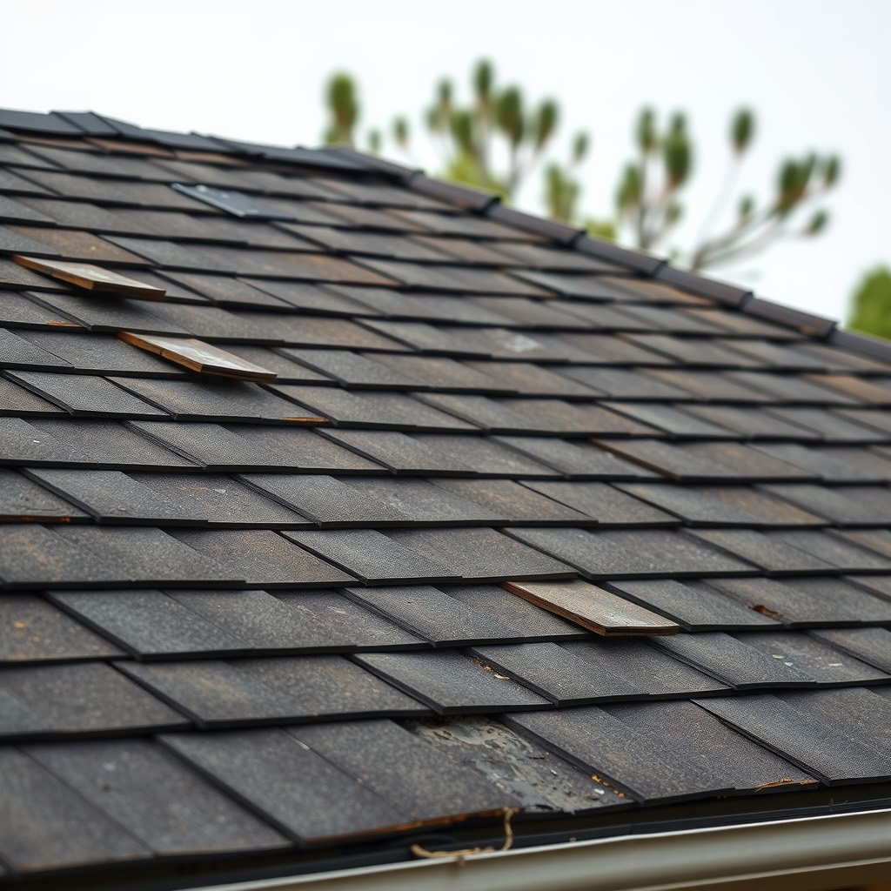
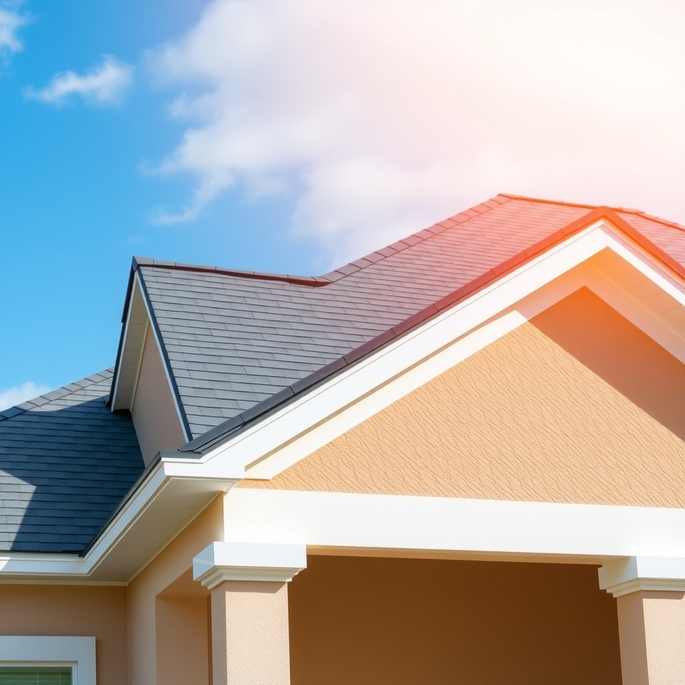
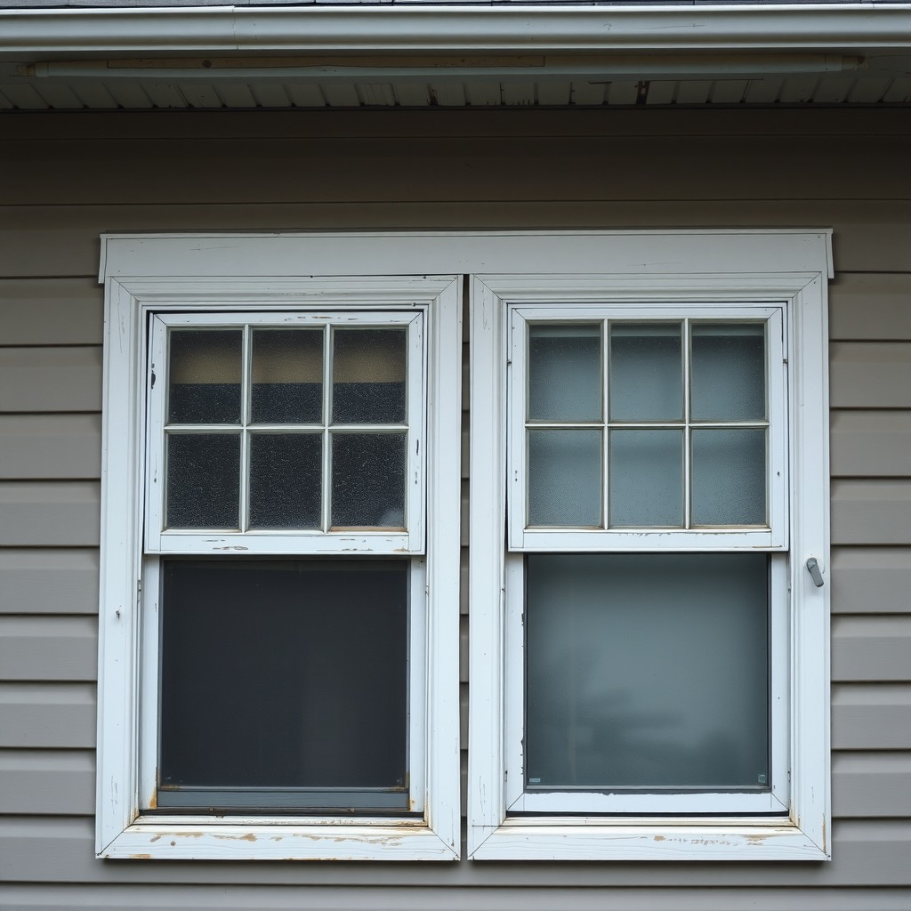
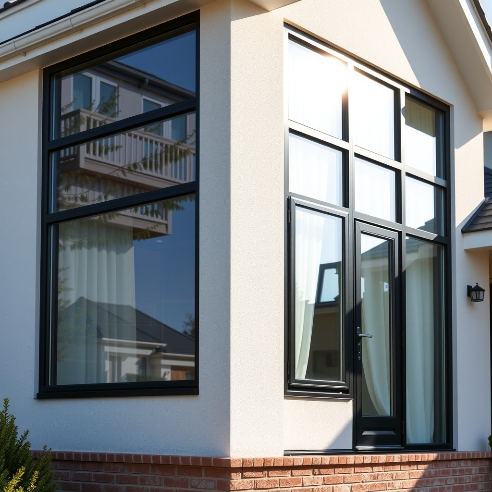
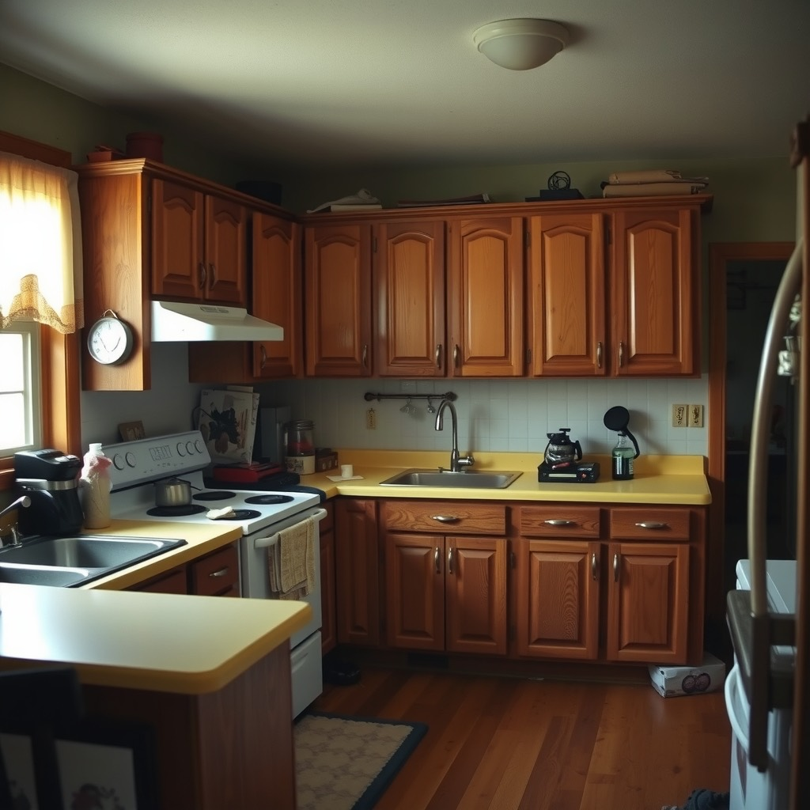
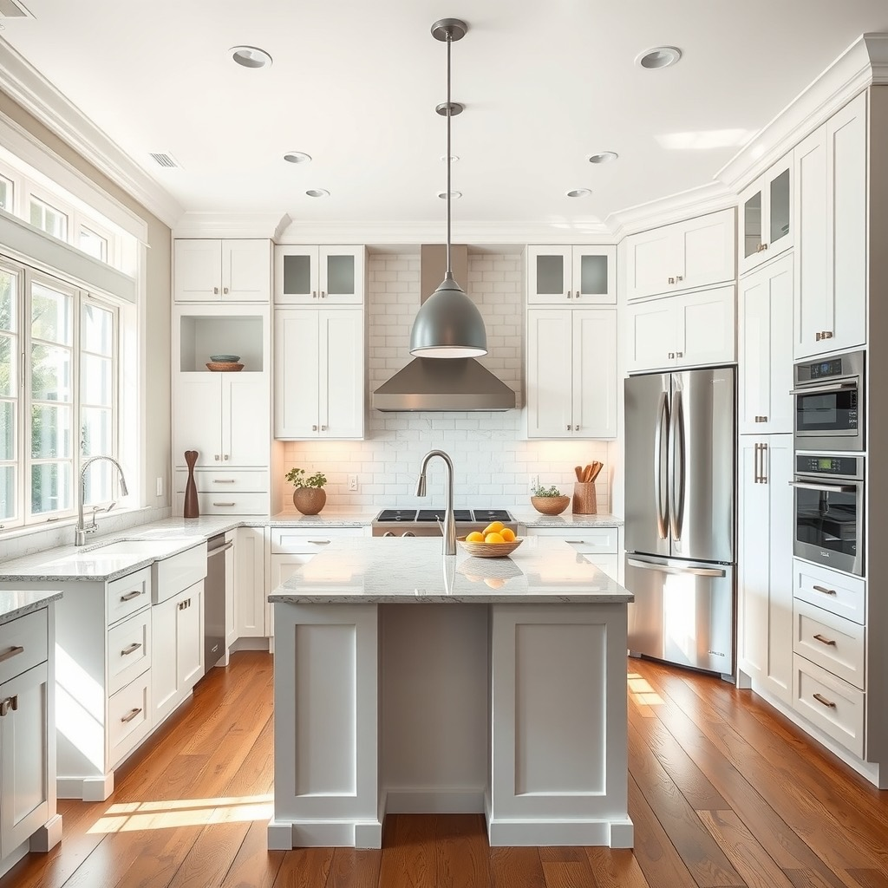
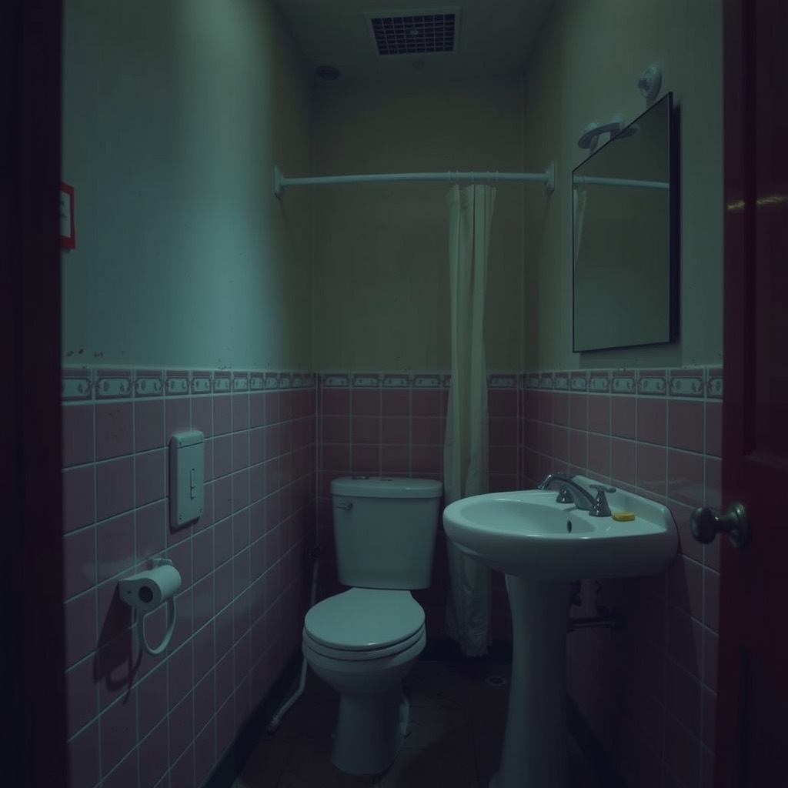
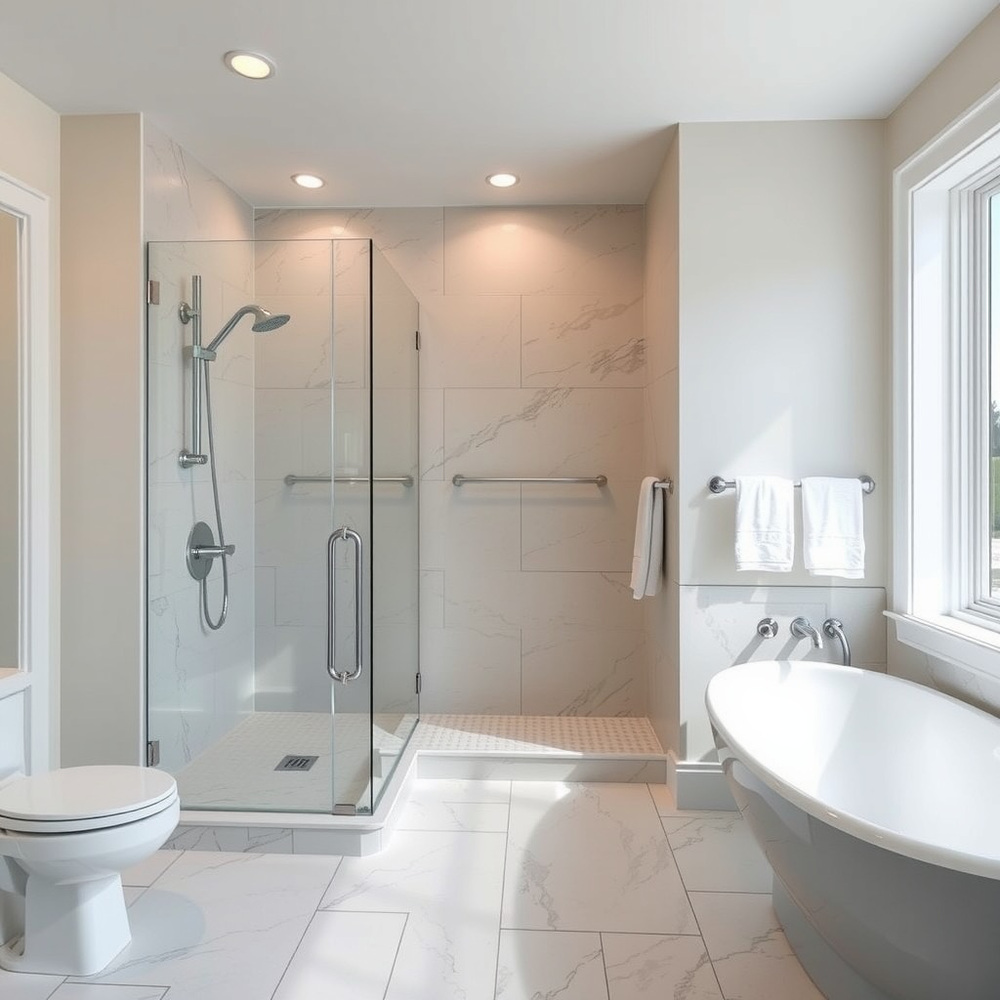

No esperes a que te llegue la casa de tus sueños — convierte la tuya, ahora.
Cada vez que llegas a tu casa deberías sentir que llegaste, no que todavía falta algo. Este es el recorrido real de una remodelación completa — sigue bajando.
Conviértela hoyDuerme tranquilo la próxima vez que truene fuerte sobre tu casa.
Materiales con clasificación de viento e instalación certificada — la diferencia entre dormir tranquilo o pasar la noche escuchando cada ráfaga contra el techo.
Inspecciona tu techoSe nota apenas entras: luz real, silencio real, una casa que por fin se siente tuya.
Vidrio de impacto certificado, pensado para el sol y las tormentas de Florida y California — para que cada ventana se sienta como una vista, no como un problema pendiente.
Renueva tus ventanasLa cocina donde por fin quieres reunir a toda tu familia.
Diseño a tu medida y materiales premium, para que cocinar en tu propia casa vuelva a sentirse especial — no algo que escondes cuando llegan visitas.
Diseña tu cocinaCoordinar tres contratistas distintos no debería ser tu segundo trabajo.
De la cocina a cada rincón de la casa, un solo equipo responde por el proyecto completo — un cronograma, un punto de contacto, cero excusas cruzadas entre contratistas.
Agenda tu evaluaciónTu baño debería sentirse como un respiro, no como algo que evitas mirar de cerca.
De la demolición al último detalle, con acabados tipo spa y garantía real — el espacio que usas todos los días, por fin como te lo mereces.
Renueva tu baño15+ años
remodelando casas en FL y CA
Licencia & seguro
al día en cada estado donde operamos
Garantía real
por escrito, sin letra chica
Un solo equipo
techo, ventanas, cocina y baño
Échale un ojo a nuestro trabajo
Una muestra de remodelaciones reales por categoría. Avanza sola — o arrástrala, usa las flechas o los puntos.

Techo original — desgaste por sol y lluvia
Techo nuevo — instalación certificada
Ventanas originales — marcos opacos
Ventanas nuevas — impacto certificado
Cocina original — años 90
Cocina nueva — isla de cuarzo
Baño original — sin renovar desde los 80
Baño nuevo — estilo spa* Fotos referenciales generadas para esta propuesta — se reemplazan por proyectos reales de Home Pro Guides antes de producción.